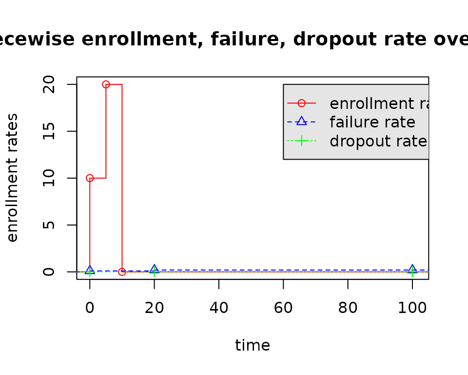

## Warning: replacing previous import 'stats::filter' by 'dplyr::filter' when
## loading 'gsDesign2'## Warning: replacing previous import 'stats::lag' by 'dplyr::lag' when loading
## 'gsDesign2'Introduction of eEvents_df
eEvents_df() computes expected number of events at a given analysis time by strata under the assumption of piecewise model:
- piecewise constant enrollment rates
- piecewise exponential failure rates
- piecewise censoring rates.
The above piecewise exponential distribution allows a simple method to specify a distribution and enrollment pattern where the enrollment, failure and dropout rates changes over time.
Here the df in eEvents_df() is short for data frame, since its output is a data frame.
Use Cases
Example 1: Single Enroll + Single Fail Period
enrollRates <- tibble(duration = 10, rate = 10)
failRates <- tibble(duration = 100, failRate = log(2) / 6, dropoutRate = .01)
totalDuration <- 22
eEvents_df(enrollRates = enrollRates, failRates = failRates, totalDuration = totalDuration, simple = FALSE)## # A tibble: 1 × 3
## t failRate Events
## <dbl> <dbl> <dbl>
## 1 0 0.116 80.4Example 2: Multiple Enroll + Single Fail Period
enrollRates <- tibble(duration = c(5, 5), rate = c(10, 20))
failRates <- tibble(duration = 100, failRate = log(2)/6, dropoutRate = .01)
totalDuration <- 22
eEvents_df(enrollRates = enrollRates, failRates = failRates, totalDuration = totalDuration, simple = FALSE)## # A tibble: 1 × 3
## t failRate Events
## <dbl> <dbl> <dbl>
## 1 0 0.116 119.Example 3: Signle Enroll + Multiple Fail Period
enrollRates <- tibble(duration = 10, rate = 10)
failRates <- tibble(duration = c(20, 80), failRate = c(log(2)/6, log(2)/4), dropoutRate = .01)
totalDuration <- 22
eEvents_df(enrollRates = enrollRates, failRates = failRates, totalDuration = totalDuration, simple = FALSE)## # A tibble: 2 × 3
## t failRate Events
## <dbl> <dbl> <dbl>
## 1 0 0.116 80.2
## 2 20 0.173 0.250Example 4: Multiple Duration
enrollRates <- tibble(duration = 10, rate = 10)
failRates <- tibble(duration = 100, failRate = log(2) / 6, dropoutRate = .01)
totalDuration <- c(2, 22)
try(eEvents_df(enrollRates = enrollRates, failRates = failRates, totalDuration = totalDuration, simple = FALSE))## Warning in if (last(cumsum(failRates$duration)) < totalDuration) {: the
## condition has length > 1 and only the first element will be used## Error in mutate(., endEnroll = lag(startEnroll, default = as.numeric(totalDuration)), :
## Problem while computing `endEnroll = lag(startEnroll, default =
## as.numeric(totalDuration))`.
## Caused by error in `lag()`:
## ! `default` must be size 1, not size 2Inner Logic of eEvents_df()
Step 1: set the analysis time.
totalDuration <- 50Step 2: set the enrollment rates.
enrollRates <- tibble(duration = c(5, 5), rate = c(10, 20))
# create a step function (sf) to define enrollment rates over time
sf.enrollRate <- stepfun(c(0, cumsum(enrollRates$duration)),
c(0, enrollRates$rate, 0),
right = FALSE)
plot(sf.enrollRate,
xlab = "duration", ylab = "enrollment rates",
main = "Piecewise enrollment rate over time", xlim = c(-0.01, 21))
Step 3: set the failure rates and dropout rates.
failRates <- tibble(duration = c(20, 80), failRate = c(0.1, 0.2), dropoutRate = .01)
# get the time points where the failure rates change
startFail <- c(0, cumsum(failRates$duration))
# plot the piecewise failure rates
sf.failRate <- stepfun(startFail,
c(0, failRates$failRate, last(failRates$failRate)),
right = FALSE)
plot(sf.failRate,
xlab = "duration", ylab = "failure rates",
main = "Piecewise failure rate over time", xlim = c(-0.01, 101))
# plot the piecewise dropout rate
sf.dropoutRate <- stepfun(startFail,
c(0, failRates$dropoutRate, last(failRates$dropoutRate)),
right = FALSE)
plot(sf.dropoutRate,
xlab = "duration", ylab = "dropout rates",
main = "Piecewise dropout rate over time", xlim = c(-0.01, 101))Given the above piecewise enrollment rates, failure rates, dropout rates, the time line is divided into several parts:
- \((0, 5]\) (5 is the change point of the enrollment rates);
- \((5, 10]\) (10 is another change point of the enrollment rates);
- \((10, 20]\) (20 is the change point of the failure rates);
- \((20, 50]\) (50 is the analysis time);
- \((50, \infty]\) (after the analysis time).

Given the above sub-intervals, our objective is to calculate the expected number of events in each sub-intervals.
Step 4: divide the time line for enrollments
df_1 <- tibble(startEnroll = c(0, cumsum(enrollRates$duration)),
endFail = totalDuration - startEnroll,
rate = c(enrollRates$rate, 0)) | df_1 | ||
|---|---|---|
| startEnroll1 | endFail2 | rate3 |
| 0 | 50 | 10 |
| 5 | 45 | 20 |
| 10 | 40 | 0 |
| 1 The time when the enrollment starts. | ||
| 2 The time from startEnroll to the analysis time. | ||
| 3 The enrollment rates | ||
Step 5: divide the time line for failure & dropout rates
df_2 <- tibble(endFail = cumsum(failRates$duration),
startEnroll = totalDuration - endFail,
failRate = failRates$failRate,
dropoutRate = failRates$dropoutRate)| df_2 | |||
|---|---|---|---|
| endFail1 | startEnroll2 | failRate3 | dropoutRate4 |
| 20 | 30 | 0.1 | 0.01 |
| 100 | -50 | 0.2 | 0.01 |
| 1 The time when the failure changes. | |||
| 2 The time from endFail to the analysis time. | |||
| 3 The failure rates | |||
| 4 The dropout rates | |||
For the above df_2, one needs to discriminate if the analysis time (totalDuration = 50) is beyond the total failure rate duration.
# if the analysis time is after the total failure rate duration
if(sum(failRates$duration) < totalDuration){
df_2 <- df_2[-nrow(df_2), ]
}else{
df_2 <- df_2 %>% filter(startEnroll > 0)
}| df_2 | |||
|---|---|---|---|
| Updated by adjusting the analysis time and failRates duration | |||
| endFail1 | startEnroll2 | failRate3 | dropoutRate4 |
| 20 | 30 | 0.1 | 0.01 |
| 1 The time when the failure changes. | |||
| 2 The time from endFail to the analysis time. | |||
| 3 The failure rates | |||
| 4 The dropout rates | |||
Step 6: divide the time line considering both the change points in enrollment, failure, dropout rates.
| df | ||||
|---|---|---|---|---|
| startEnroll1 | endFail2 | rate3 | failRate | dropoutRate |
| 30 | 20 | NA | 0.1 | 0.01 |
| 10 | 40 | 0 | NA | NA |
| 5 | 45 | 20 | NA | NA |
| 0 | 50 | 10 | NA | NA |
| 1 The time when the enrollment rate starts. | ||||
| 2 The time when the failure rate ends. And startEnroll + endFail = 50 | ||||
| 3 The enrollment rates. | ||||
We find there are lots of NA, which can be imputed by the piecewise model.
df <- df %>% mutate(endEnroll = lag(startEnroll, default = as.numeric(totalDuration)),
startFail = lag(endFail, default = 0),
duration = endEnroll - startEnroll,
failRate = sf.failRate(startFail),
dropoutRate = sf.dropoutRate(startFail),
enrollRate = sf.enrollRate(startEnroll)) %>%
select(-rate)| startEnroll1 | endEnroll2 | startFail3 | endFail4 | enrollRate | failRate | dropoutRate | duration5 |
|---|---|---|---|---|---|---|---|
| 0 | 5 | 45 | 50 | 10 | 0.2 | 0.01 | 5 |
| 5 | 10 | 40 | 45 | 20 | 0.2 | 0.01 | 5 |
| 10 | 30 | 20 | 40 | 0 | 0.2 | 0.01 | 20 |
| 30 | 50 | 0 | 20 | 0 | 0.1 | 0.01 | 20 |
| 1 The time when the enrollment rate starts. | |||||||
| 2 The (startEnroll, endEnroll] forms the piecewise model of the enrollment rates | |||||||
| 3 The time when the failure rate starts. | |||||||
| 4 The time when the failure rate ends. And startEnroll + endFail = 50. Besides, (startFail, endFail ] forms the piecewise model of the enrollment rates. | |||||||
| 5 endEnroll - startEnroll | |||||||
Step 7: compute the expected number of events in sub-intervals following the technical details in the vignette ``computing expected events by interval at risk’’
# create 2 auxiliary variable for failure & dropout rate
# q: number of expected events in a sub-interval
# Q: cumulative product of q (pool all sub-intervals)
df <- df %>% mutate(q = exp(-duration * (failRate + dropoutRate)),
Q = lag(cumprod(q), default = 1)) %>%
arrange(desc(startFail)) %>%
# create another 2 auxiliary variable for enroll rate
# g: number of expected subjects in a sub-interval
# G: cumulative sum of g (pool all sub-intervals)
mutate(g = enrollRate * duration,
G = lag(cumsum(g), default = 0)) %>%
arrange(startFail) %>%
# compute expected events as nbar in a sub-interval
mutate(d = ifelse(failRate == 0, 0, Q * (1 - q) * failRate / (failRate + dropoutRate)),
nbar = ifelse(failRate == 0, 0, G * d + (failRate * Q * enrollRate) / (failRate + dropoutRate) * (duration - (1 - q) / (failRate + dropoutRate))))Step 8: output results
sf.startFail <- stepfun(startFail, c(0, startFail), right = FALSE)
df <- df %>%
transmute(t = endFail, failRate = failRate, Events = nbar, startFail = sf.startFail(startFail)) %>%
group_by(startFail) %>%
summarize(failRate = first(failRate), Events = sum(Events)) %>%
mutate(t = startFail) %>%
select("t", "failRate", "Events")
df %>% gt()| t | failRate | Events |
|---|---|---|
| 0 | 0.1 | 121.25411 |
| 20 | 0.2 | 15.71391 |